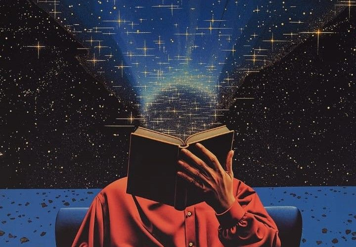
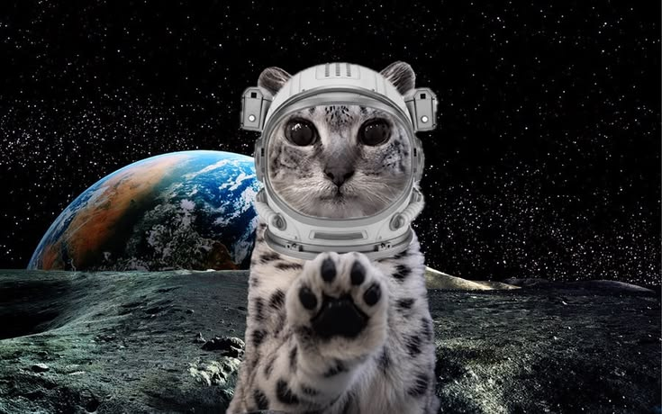
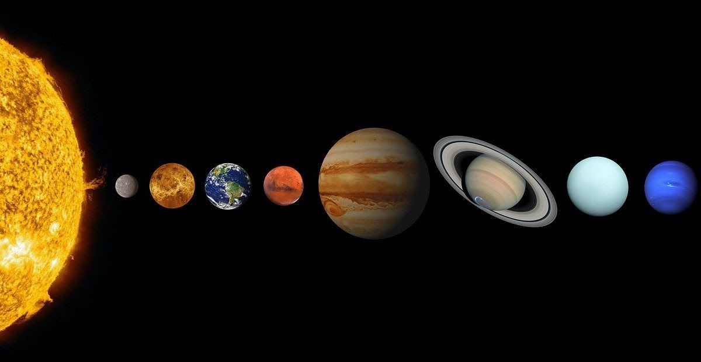
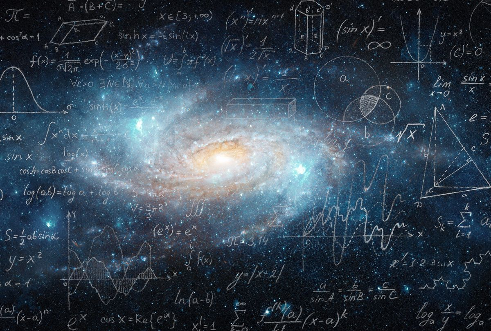

Biblioteca
Explore imagens, registros, observações e publicações científicas de diferentes agências espaciais em um só lugar.
Explorar biblioteca →
Jogos
Interaja com o universo de forma lúdica. Teste seus conhecimentos, explore desafios e descubra mais sobre a ciência espacial.
Conhecer os jogos →Explore o universo
Conheça alguns dos temas que ajudam a compreender o cosmos.

Sistema Solar
O Sol e todos os corpos que orbitam ao seu redor. Uma viagem por 4,6 bilhões de anos de história cósmica.
Ler artigo →Big Bang
A teoria que descreve a origem e a expansão do Universo, desde seus primeiros instantes.
Ler artigo →Expedições Espaciais
Da corrida espacial às agências que hoje investigam os mistérios do Universo.
Ler artigo →
Astrofísica
Como as leis da física ajudam a entender estrelas, planetas, galáxias e outros fenômenos.
Ler artigo →Foguetes
A engenharia por trás dos lançamentos espaciais e os desafios de vencer a gravidade.
Ler artigo →